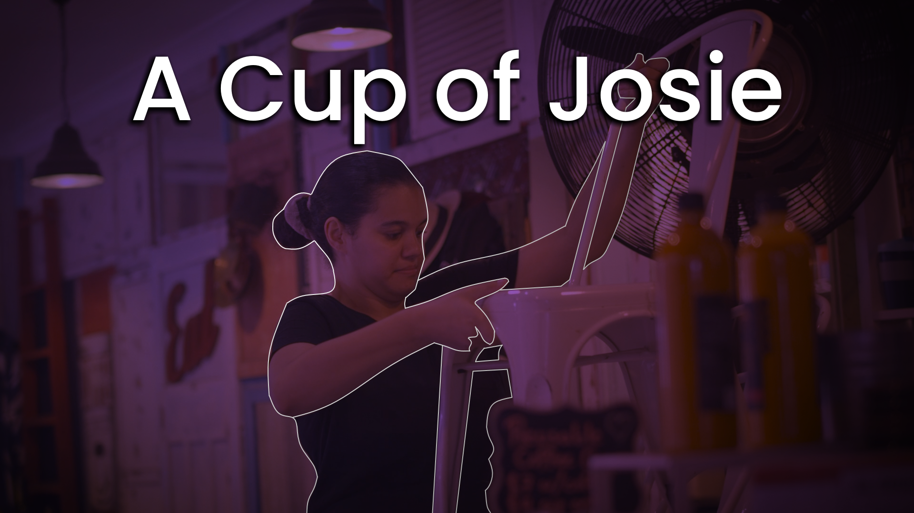
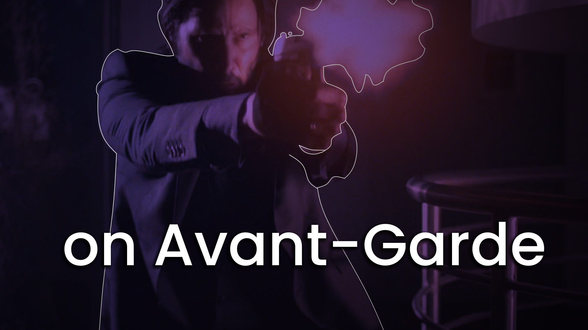

Välkommen!
My name is Adrian, and on this page I'll be taking you on a small tour through my journey as a creative arts paraprofessional.
I am a Bachelor of Film (Post Production) student due to graduate by December 2020.
I'm a technology and entertainment enthusiast. I enjoy entertainment (don't we all?) and I like to think about how entertainment is made. I'm a technologically adept youth of this new millenium, and I seek to make the world a more bearable place. I am also an aspiring motion designer and editor, and am currently refining my skills in both Adobe Premiere Pro and Adobe After Effects.
I started studying at SAE because I thought it was the perfect place for someone of my calibre to recieve a training regimen effective enough to see a career in this path. Film has always been a subtle passion of mine, and with the skills that SAE has equipped me with, I'm grateful to say that I chose the right path.
My hobbies include building mechanical keyboards, lauding over well-shot films, and playing at amateur levels of competitive
I’m an enthusiastic individual who is eager to embrace new and diverse challenges to advance my working career. I am a quick learner who is determined to develop my abilities while adding maximum value to my organisation.
I take pride in my work, where I would devote time and effort into achieving the best possible results, including being a team player for my colleagues through communications skills and trust building.
Here's my resume.
I am not going to give up before I win a motherfucking major. - Danylo "Zeus" Teslenko (1 year and 14 days before he won a $1,000,000 Counter-Strike: Global Offensive major tournament)
My works
Unfortunately, due to my limited experience in HTML/CSS, I can't manage to embed YouTube links and have them appear consistently across desktop and mobile platforms. Click on the thumbnails to view the video in question.

A Cup of Josie (2019), directed by Hayden Huynh.
This is a documentary about Josephine "Josie" Casey, focusing on a "day in the life" of an apprentice chef, and the various
themes of inclusivity and diversity within the hospitality industry.
On this production I worked as the Director of Photography, as well as the lead (and only) motion graphics animator, primarily
focusing on the lower-thirds and the animated intro sequence. No templates were used.

Video Essay / Avant Garde Filmmaking (2019), directed by Adrian Roas.
In this video essay, my colleague Jack and I explore what avant-garde filmmaking is and how it affects the commercial
standard method of filmmaking. I'll admit, it's a bit of a fluff piece, but it's one I certainly enjoyed creating. Skip to 3:30 for my part.